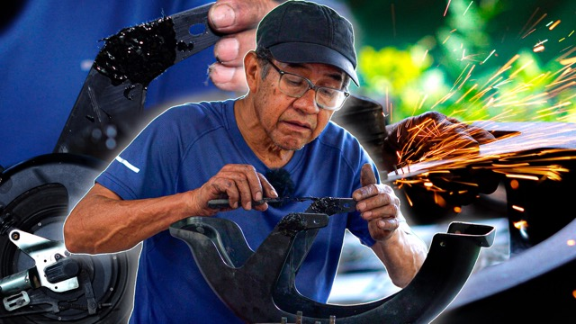
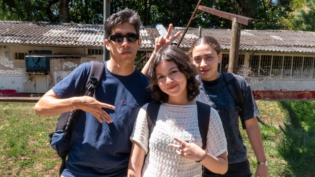
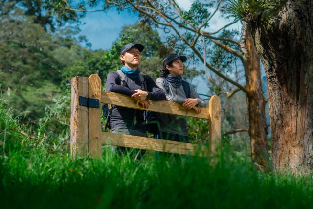

▶Tecnofibra
Conocimiento práctico, procesos y tutoriales alrededor de la fibra de vidrio.
Visitar canal ↗PRODUCCIONES / 01
Proyectos propios, relatos y experimentos que conectan con lo que nos rodea.

SERIE DOCUMENTAL EM / 001Volver a la universidad, aprender y descubrir nuevas formas de crear. Una serie documental que registra el recorrido, dentro y fuera del aula.
Ver en YouTube ↗
▶Conocimiento práctico, procesos y tutoriales alrededor de la fibra de vidrio.
Visitar canal ↗
↗Historias que preservan la memoria del territorio, su cultura y biodiversidad.
Explorar proyecto ↗Este archivo seguirá creciendo con cada historia que nos encontremos.
Propón una historia ↗